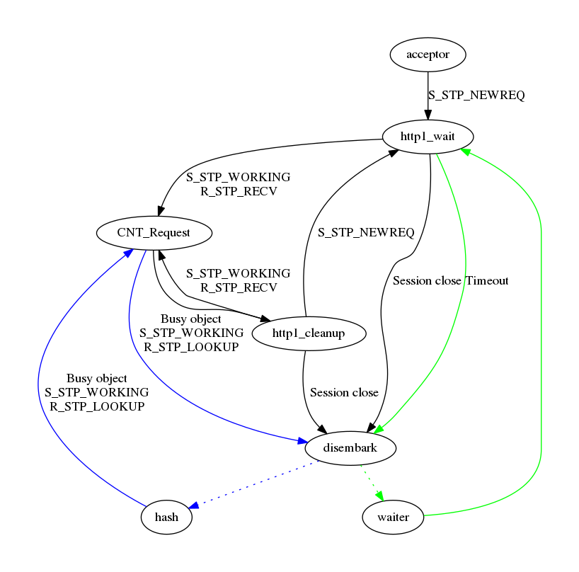

Introduction
This is the only chapter written in first person.
I've worked on Varnish since late 2008, first for Redpill Linpro, then Varnish Software, then, after a brief pause, for Redpill Linpro again. Over the years I've written code, written Varnish modules and blog posts, tried to push the boundaries of what Varnish can do, debugged or analyzed countless Varnish sites, probably held more training courses than anyone else, written training material, and generally helped shape the Varnish community.
Today I find myself in a position where the training material I once maintained is no longer my responsibility. But I still love writing, and there's an obvious need for documentation for Varnish.
I came up with a simple solution: I will write a book. Because I couldn't imagine that I would ever finish it if I attempted writing a whole book in one go, I decided I would publish one chapter at a time on my blog. This is the first chapter of that book.
You will find the source on https://github.com/KristianLyng/varnishfoo. While the format will be that of a book, I intend to keep it alive with revisions.
I intend to cover as much Varnish-related content as possible, from administration to web development and infrastructure. My hope is that one day, this will be good enough that it will be worth printing as more than just a leaflet.
I am writing this in my spare time, I retain full ownership of the material. For now, the material is available under a Creative Commons "CC-BY-SA-NC" license. This is a Creative Commons license that allows full non-commercial usage to you as the reader, including copies and modifications, as long as attribution is provided. The NC-part of that license will be removed when I feel the material has matured enough and the time is right. To clarify, the "non-commercial" clause is aimed at people wanting to sell the book or use it in commercial training (or similar) - it is not intended to prevent you from reading the material at work.
I hope you will enjoy this book, and I would appreciate any feedback you could give, positive or negative.
Target audience and format
This book covers a large range of subjects related to Varnish. The first few chapters are general enough to be of interest to all, while later chapters specialize on certain aspects of Varnish usage.
Each chapter stands well on its own, but there are some cross-references. The book focuses on best practices and good habits that will help you beyond what just a few examples or explanations will do.
Each chapter provides both theory and practical examples. Each example is tested with a recent Varnish Version where relevant, and is based on experience from real-world Varnish installations.
What is Varnish
Varnish is a web server.
Unlike most web servers, Varnish does not read content from a hard drive, or run programs that generates content from SQL databases. Varnish acquires the content from other web servers. Usually it will keep a copy of that content around in memory for a while to avoid fetching the same content multiple times, but not necessarily.
There are numerous reasons you might want Varnish:
- Your web server/application is a beastly nightmare where performance is measured in page views per hour - on a good day.
- Your content needs to be available from multiple geographically diverse locations.
- Your web site consists of numerous different little parts that you need to glue together in a sensible manner.
- Your boss bought a service subscription and now has to justify the budget post.
- You like Varnish.
- ???
Varnish is designed around two simple concepts: Give you the means to fix or work around technical challenges. And speed. Speed was largely handled very early on, and Varnish is quite simply fast. This is achieved by being, at the core, simple. The less you have to do for each request, the more requests you can handle.
The name suggests what it's all about:
From The Collaborative International Dictionary of English v.0.48 [gcide]:
Varnish \Var"nish\, v. t. [imp. & p. p. {Varnished}; p. pr. &
vb. n. {Varnishing}.] [Cf. F. vernir, vernisser. See
{Varnish}, n.]
[1913 Webster]
1. To lay varnish on; to cover with a liquid which produces,
when dry, a hard, glossy surface; as, to varnish a table;
to varnish a painting.
[1913 Webster]
2. To cover or conceal with something that gives a fair
appearance; to give a fair coloring to by words; to gloss
over; to palliate; as, to varnish guilt. "Beauty doth
varnish age." --Shak.
[1913 Webster]
Varnish can be used to smooth over rough edges in your stack, to give a fair appearance.
History
The Varnish project began in 2005. The issue to be solved was that of a large Norwegian news site (or alternatively a tiny international site). The first release came in 2006, and worked well for www.vg.no. In 2008, Varnish 2.0 came, which opened Varnish up to more sites, as long as they looked and behaved similar to www.vg.no. As time progressed and more people started using Varnish, Varnish has been adapted to a large and varied set of use cases.
From the beginning, the project was administered by Redpill Linpro, with the majority of development being done by Poul-Henning Kamp through his own company and his Varnish Moral License. In 2010, Varnish Software sprung out from Redpill Linpro. Varnish Cache has always been a free software project, and while Varnish Software has been custodians of the infrastructure and large contributors of code and cash, the project is independent and has a completely open development process.
Varnish Plus was born some time during 2011, all though it didn't go by that name at the time. It was the result of somewhat conflicting interests. Varnish Software had customer obligations that required features, and the development power to implement them, but they did not necessarily align with the goals and time frames of Varnish Cache. Varnish Plus became a commercial test-bed for features that were not yet in Varnish Cache for various reasons. As time passed, many of the features that begun life in Varnish Plus have trickled into Varnish Cache proper in one way or an other (streaming, surrogate keys, and more), and some have still to make it. Some may never make it. This book focuses on Varnish Cache proper, but will reference Varnish Plus where it makes sense.
With Varnish 3.0, released in 2011, Varnish modules suddenly became very popular. These are modules that are not part of the Varnish Cache code base, but are loaded at run-time to add features such as cryptographic hash functions (vmod-digest) and memcached.
Varnish would not be where it is today without a large number of people and businesses. Varnish Software have contributed and continues to contribute numerous tools, vmods, and core features. Poul-Henning Kamp is still the gatekeeper of Varnish Cache code, and does the majority of the architectural work. Over the years, there have been too many companies and individuals involved to list them all here.
Today, Varnish is used by CDNs and news papers, APIs and blogs.
More than just cache
Varnish caches content, but can do much more. In 2008, it was used to rewrite URLs, normalize HTTP headers and similar things. Today, it is used to implement paywalls (whether you like them or not), API metering, load balancing, CDNs, and more.
Varnish has a powerful configuration language, the Varnish Configuration Language (VCL). VCL isn't parsed the traditional way a configuration file is, but is translated to C code, compiled and linked into the running Varnish. From the beginning, it was possible to bypass the entire translation process and provide C code directly, which was never recommended. Much of the experimental in-line C code from past Varnish versions have found new life in Varnish modules since their introduction.
There is also a often overlooked Varnish agent that provides a HTTP REST interface for managing Varnish. This can be used to extract metrics, review or optionally change configuration, stop and start Varnish, and more. The agent lives on https://github.com/varnish/vagent2, and is packaged for most distributions today.
Using Varnish to gracefully handle operational issues is common. Serving cached content past its expiry time while a web server is down, or switching to a different server, will give your users a better browsing experience. And in a worst case scenario, at least the user can be presented with a real error message instead of a refused or timed out connection.
Edge Side Includes is a means to build a single HTTP object (like a HTML page) from multiple smaller object, with different caching properties. This lets content writers provide more fine-grained caching strategies without having to be too smart about it.
Where to get help
The official varnish documentation is available both as manual pages (run man -k varnish on a machine with a properly installed Varnish package), and as online documentation found under http://varnish-cache.org/docs/. You will also find a user-guide and a tutorial in the same on-line documentation.
Varnish Software publishes their official training material, which is called "The Varnish Book" (Not to be confused with THIS book about Varnish). This is available freely through their site at http://varnish-software.com, after registration.
An other less known source of information for Varnish is the flow charts/dot-graphs used to document the VCL state engine. The only official location for this is found in the source code of Varnish, under doc/graphviz/. They can be generated, assuming you have graphviz installed:
# git clone http://github.com/varnish/Varnish-Cache/ Cloning into 'Varnish-Cache'... (...) # cd Varnish-Cache/ # cd doc/graphviz/ # for a in *dot; do dot -Tpng $a > $(echo $a | sed s/.dot/.png/); done # ls *png
Alternatively, replace -Tpng and .png with -Tsvg and .svg respectively to get vector graphics, or -Tpdf/.pdf for pdfs.
For convenience, the graphs from Varnish 4.1 are included. If you don't quite grasp what these tell you yet, don't be too alarmed. These graphs are provided early as they are useful to have around as reference material and because there is no official location to find them pre-generated. A brief explanation for each is included, mostly to help you in later chapters.
cache_req_fsm.png

cache_req_fsm details the client-specific part of the VCL state engine. And can be used when writing VCL. You want to look for the blocks that read vcl_ to identify VCL functions. The lines tell you how a return-statement in VCL will affect the VCL state engine at large, and which return statements are available where. You can also see which objects are available where.
cache_fetch.png

cache_fetch has the same format as the cache_req_fsm.png, but from the perspective of a backend request.
cache_http1_fsm.png
Of the three, this is the least practical flow chart, mainly included for completeness. It does not document much related to VCL or practical Varnish usage, but the internal state engine of an HTTP request in Varnish. It can sometimes be helpful for debugging internal Varnish issues.